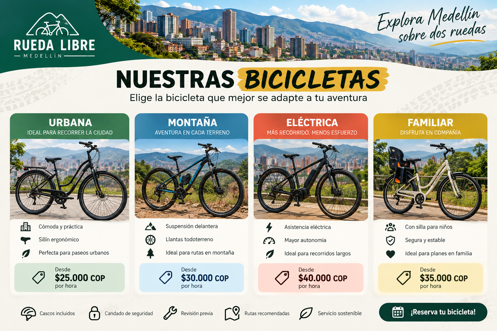
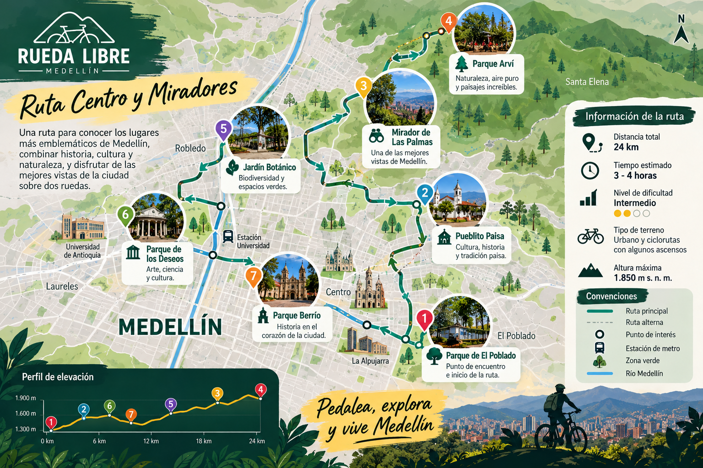

Bienvenido a Rueda Libre , una empresa dedicada al alquiler y guía turística en bicicleta alrededor de la ciudad de Medellín
En Rueda Libre creemos que la mejor manera de descubrir Medellín es sobre dos ruedas. Somos una empresa dedicada al alquiler de bicicletas y la organización de recorridos guiados por la ciudad, ofreciendo experiencias que combinan aventura, turismo, diversión y movilidad sostenible.
Nuestro propósito es brindar a residentes y visitantes una forma diferente de explorar Medellín, conocer sus lugares más emblemáticos, descubrir rincones especiales y disfrutar de la ciudad a su propio ritmo.
Promovemos el uso de la bicicleta como una alternativa de transporte saludable, ecológica y accesible, mientras fomentamos el turismo responsable y el respeto por el medio ambiente.
En Rueda Libre, no solo alquilamos bicicletas, ¡creamos experiencias y recuerdos sobre ruedas!
Explora Medellín a tu propio ritmo con nuestro servicio de alquiler de bicicletas. Contamos con opciones cómodas y seguras para que disfrutes de la ciudad, recorras sus calles y descubras nuevos lugares de una manera divertida, saludable y sostenible
Descubre los lugares más emblemáticos de Medellín a través de nuestros recorridos guiados en bicicleta. Acompañado de guías, podrás conocer la historia, cultura y atractivos turísticos de la ciudad mientras disfrutas de una experiencia única sobre dos ruedas.
En Rueda Libre queremos que disfrutes de cada recorrido con tranquilidad. Por eso, ofrecemos un servicio de mantenimiento básico para bicicletas, que incluye revisión general, ajustes de frenos, lubricación de cadenas y mantenimiento preventivo, ayudándote a mantener tu bicicleta en óptimas condiciones.

Selecciona la fecha y el horario de alquiler. Contáctanos para consultar la disponibilidad y confirmar tu reserva.
Acércate a nuestro punto de entrega, presenta tu documento de identificación y recibe tu bicicleta junto con las recomendaciones de seguridad para tu recorrido.
Explora Medellín a tu ritmo, descubre nuevos lugares y disfruta de una experiencia inolvidable. Al finalizar, devuelve la bicicleta en el lugar y horario acordados
Conoce nuestros recorridos y tarifas

En Rueda Libre estamos listos para acompañarte en tu próxima aventura sobre dos ruedas. Visítanos en Medellín y descubre una forma diferente de recorrer la ciudad. Ya sea que quieras alquilar una bicicleta, participar en nuestros recorridos guiados o realizar un mantenimiento básico, estaremos encantados de atenderte
Parques del Río local 101
Wpp/Correo/Instagram
Lunes a domingo: 7:00 a.m - 6:00 p.m